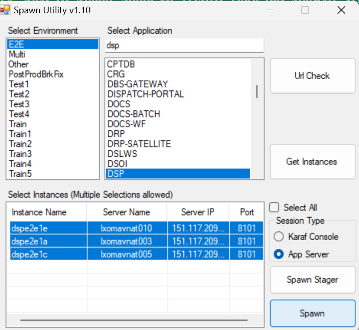
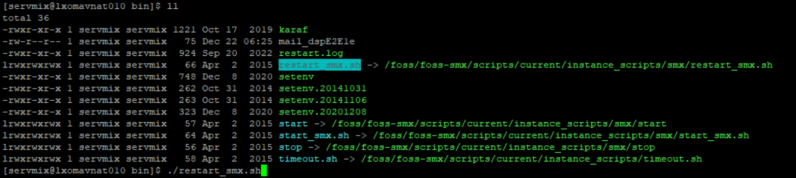

Steps for Manual Bounce, in this case DSP E2E.
- Spawn the app servers using spawn utility as shown below.
- Go to /foss/foss-smx/instances/smx-4.4.1/dspE2E1e/bin
- ./restart_smx.sh (Run this script)
- Do the same in all the servers dspe2e1e, dspe2e1a, dspe2e1c

